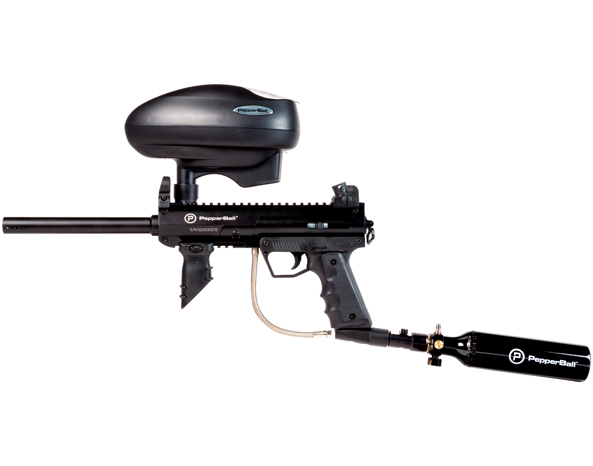
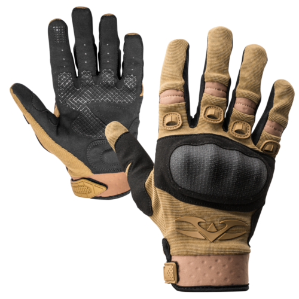
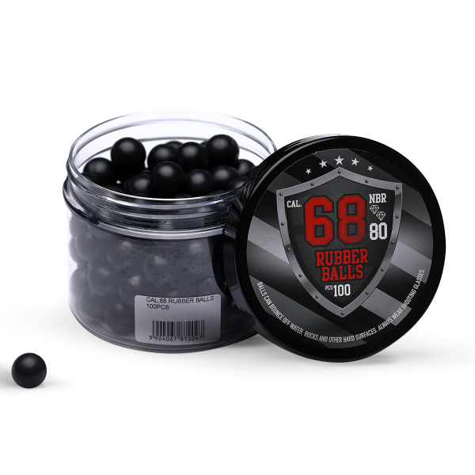
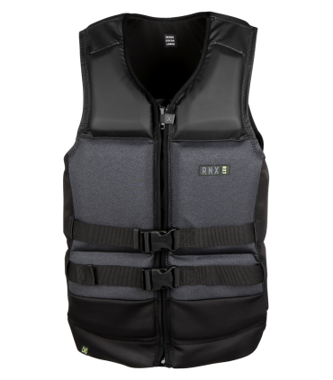
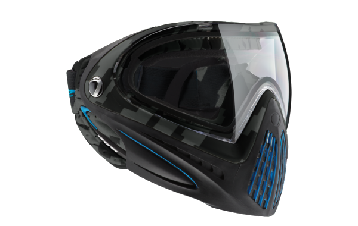
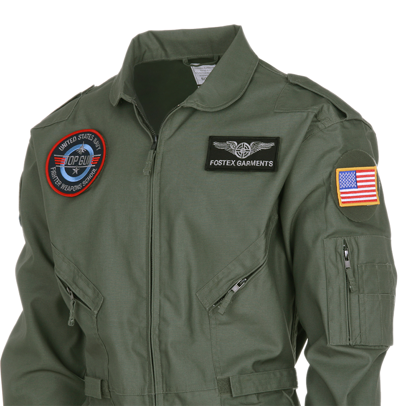

1- PAINTBALL-aren SEGURTASUN ARAUAK
Segurtasun arau arruntak hauek dira:
- Inoiz ez jaitsi ezta kendu maskara.
- Tirorik ez egin 6 metro edo gertuago dagoen norbaiti.
- Ezin duzu helduentzako Paintballean jokatu 14 urte baino gutxiago badituzu.
- Ez kendu asegurua Paintball zelai barruan gauden arte.
- Ez da txupetea kendu behar segurtasun gunetik irten arte.
- Mantendu marka (arma) lurrera apuntatuta, partida hasi arte.
- Ez egin tiro eskua altxatzen duen aurkariari.
- Ez egin tiro gehiagorik monitoreak jokoaren amaiera seinalatu egiten duenean.
2- PAINTBALL-aren OINARRIZKO ARAUAK
- Jokalari bat hilda egongo da tiro bat gorputzaren edozein tokian hartzean margoz zikinduz gero.
- Tiroa markatzailean ematekotan hilda egongo zara ere.
- Markatzaileak ondo erregulatuta egon behar dira eta gehienez 90m/s ko abiadura izan dezakete.
- Markatzailearekin, maskararekin edo beste ekipamenduko atalen batekin arazoren bat egotekotan jokalaria eskua altzatuta aterako da. Eta epailea arazoa konpondu ostean jokalaria berriz eskua altzatuta sartuko da zegoen leku berera.
- Aurkari bat 6 metro baino gertuago aurkitzekotan eliminatzeko markatzailea erabili beharrean ahotsa erabiliko dugu.
- Epaileen aginduak derrigorrez jarraitu behar ditugu partida osoan zehar.
- Halaber, eremuaren mugetatik irtetea, «lagun» sua jasotzea eta besokoa kentzea ere eliminatzen da.
- Jokalari bat tiro bat hartzekotan ez badu ezer esaten eta partida bukatzean margo orbana aurkitzekotan bere taldea ronda galduko du.
3- ARAU BEREZIAK
- Talka bat zauritutzat jotzen da, eta bi inpaktu heriotzatzat.
- Balitek e zaurituak sendatuko dituzten medikuak egotea.
- Baliteke gorputz-adarrak edo markatzailea heriotzatzat ez hartzea.
EKIPAMENDUA
|  |  |  |  |
|---|---|---|---|
| MARKATZAILEA | ESKULARRUAK | MARGO-BOLAK | SEGURTASUN PETOA |
| Pintura bolak jaurtiko dituen arma da, aire komprimatua edo CO2-ak propultsatua. | Bereziki garrantsitzuak neguan, eskuak eta eskumuturrak babesten dituzte enfrentamendu batean, aurrean doazen gorputzeko atalak direnez inpaktu gehien hartzen dituzte. | Markatzaileak erabiltzen duten munizioa da. Bere gainazal, bigun samarra, gorputza jotzean hausteko diseinatuta daude bereziki, gorputzaren barrualdea gorputzera isuriz. | Beste errefortzu bat babesa maximoa izan dadin, dibertsioa bezala. |
|  |  | ||
|---|---|---|---|
| MASKARA BABESLEA | SEGURTASU JANTSIA | ||
| Bolen talkatik babesten du aurpegia, eta kristalak ditu, jolas eroso eta ahalik eta ikusgarritasun handienerako egokitzen direnak, bai hotzarekin, bai beroarekin. | Lubakiak zeharkatzen, oztopoak gainditzen eta inpaktuak jasotzen dituzun bitartean, babestuago eta zikintzeko beldurrik gabe joka dezazun. |